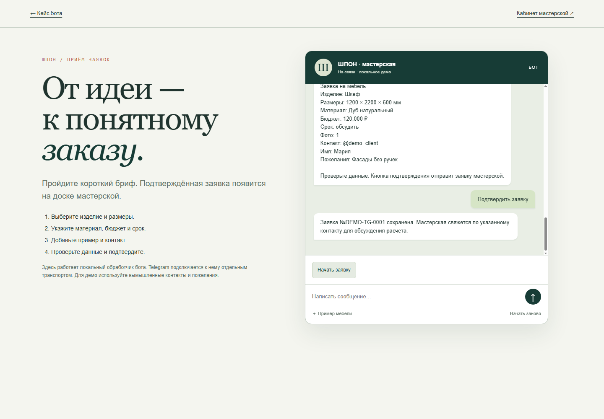

Мебельная мастерская · прототип бота
Каждой идее —
понятный бриф.
Последовательные вопросы превращают пожелания в проверяемую сводку: изделие, размеры, материал, бюджет, срок и пример.
Модельный проект портфолио. Публичное демо работает в браузере: без Telegram, сервера, уведомлений и передачи заявок в кабинет.
ШПОНОт разговора — к понятному брифу
Пожелание
«Хочу шкаф в прихожую»
↓
Сценарий вопросов
1200 × 2200 × 600 мм · Дуб
↓
Проверка перед подтверждением
Модельный бриф · только в этой вкладке
Задача
До расчёта нужны
правильные вопросы.
Мастерской важно быстро понять изделие и ограничения. Сценарий задаёт вопросы по очереди, проверяет размеры и бюджет и позволяет оставить неопределённые значения для обсуждения.
Перед завершением посетитель видит все данные. Любое поле можно изменить, сохранив остальные ответы. Подтверждение только завершает демонстрацию в текущей вкладке.
Контактные данные здесь не нужны. Используйте вымышленные пожелания. Данные не сохраняются и очищаются при обновлении страницы.
Изделие и размерыШкаф, стол, стеллаж или другое. Три размера в миллиметрах.
Материал, бюджет, срокМодельные ответы и проверки основных значений.
Модельный примерГотовая схема шкафа либо продолжение без примера.
Проверка и редактированиеИзменение полей, подтверждение и начало заново.
Рабочий сценарий
Вопросы ведут
к готовому брифу.
Попробуйте чат: выберите модельные ответы или введите вымышленные пожелания. Кнопка примера добавляет демонстрационную схему шкафа.
Это браузерная версия сценария, а не подключение к действующему Telegram-боту. Никакие заявки или сообщения наружу не отправляются.
Открыть диалог ↗
Изображение показывает исходный локальный прототип. Публичный сценарий имеет отдельный browser-only обработчик и не запрашивает контакты.
Отдельный исходный прототип
Интеграция —
следующий этап.
В исходном локальном прототипе разработаны Python-обработчик, сохранение брифа и связь с доской мастерской. Эти компоненты не работают на статическом сайте и не подключены к публичному чату.
Кабинет можно посмотреть отдельно как модельный интерфейс. Завершение этого чата не создаёт в нём карточку.
Посмотреть кабинет ↗Клиентский запуск
От прототипа
к рабочему боту.
Подключение Telegram, сервер, хранение, уведомления, доступы и синхронизация с кабинетом выполняются и проверяются отдельно под проект заказчика.
Токен, рабочая база и личная конфигурация в публичную копию не входят. Дизайн и функции прототипа могут дорабатываться и заменяться.
Описание публичного демо →Прототип, не финальная версия.
Бренд и пример брифа смоделированы для портфолио. Здесь демонстрируются интерфейс и логика типовой автоматизации, а не раскрываются готовые клиентские системы.